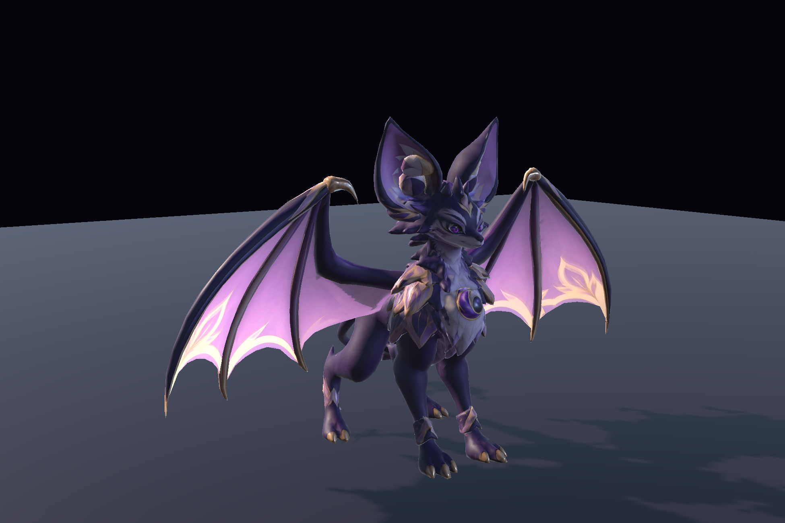

Noctaryl
A winged darkness familiar. Three attacks, violet energy and a complete animated companion.
Submitted for Unity review
Discover the familiar↗NYRAEVON / CREATURES
Discover our animated familiars through their actual Unity demonstrations.

A winged darkness familiar. Three attacks, violet energy and a complete animated companion.
Submitted for Unity review
Discover the familiar↗
An inquisitive fire familiar. Claw, fireball, flame breath and a playful ember chase.
Submitted for Unity review
Discover the familiar↗These autonomous character assets provide the model, animation and visual effects. Developers connect them to their own games. The base models and textures originate from AI-assisted Meshy generation.